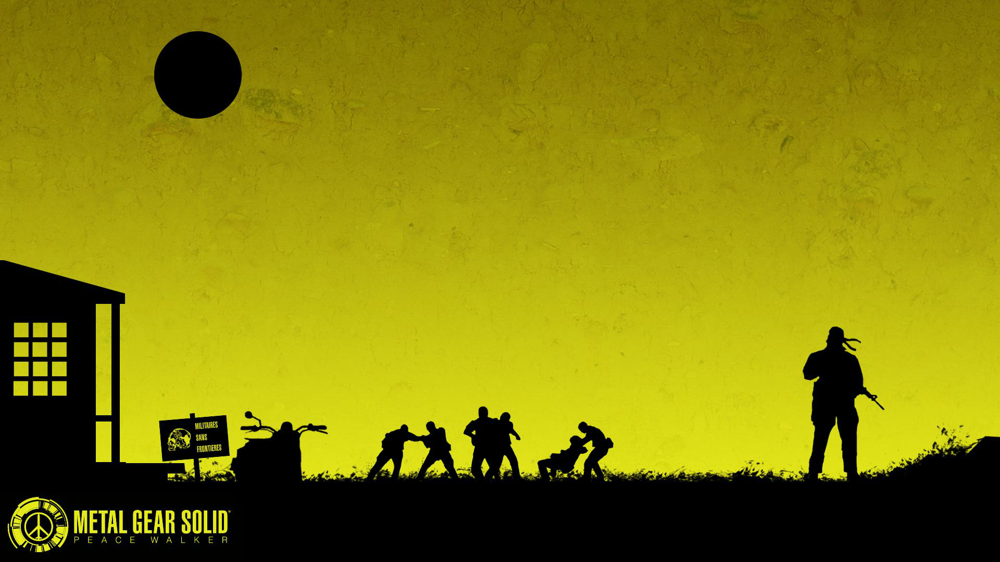

Данная часть серии является ключевой в развитии персонажа Биг Босса. И по счастливому совпадению в неё можно сыграть без костылей!
Вам в любом случае потребуется скачать эмулятор, но какой - решать вам. Игра выходила изначально на PSP, но на PS3 позже получила HD-ремастер.
Для игры на ПК Вам потребуется: